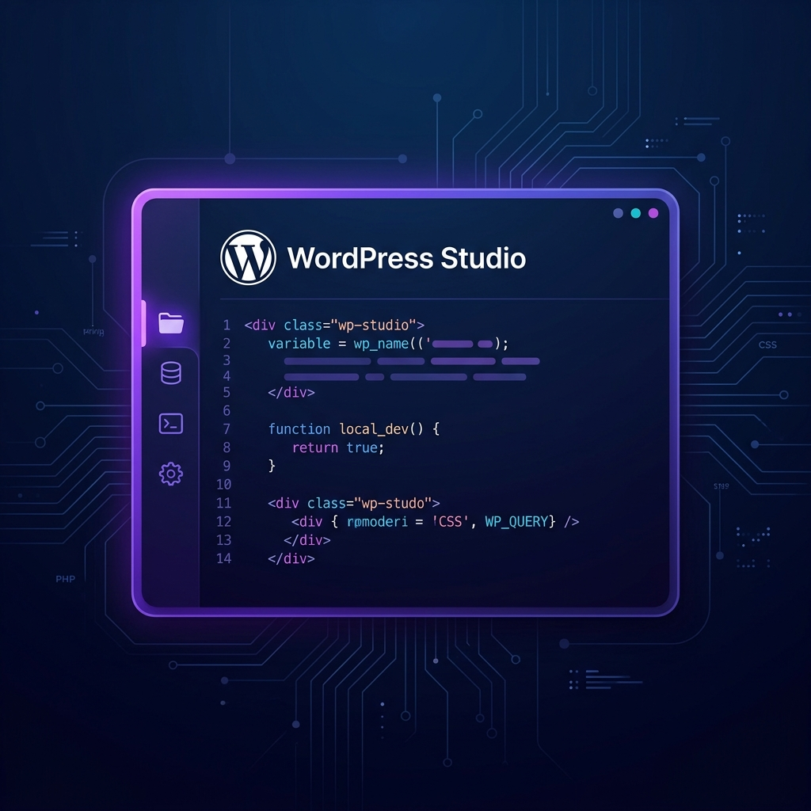

WordPress Studio: The Fast, Dependency-Free Local Development Revolution


Local development has traditionally been a bit of a hurdle—Docker, MAMP, or local server setups often feel heavy and prone to configuration drifts. Enter WordPress Studio: a free, open-source desktop application from Automattic that redefines local development speed using WebAssembly (WASM) and SQLite.
1. The WebAssembly Engine
Studio is built on WordPress Playground. Instead of running a virtualized Linux server or a local MySQL instance, it runs PHP directly in the browser/app context via WebAssembly and uses SQLite for the database.
This means your local site starts in less than a second. No background processes running when you're not using it, and zero system dependencies to manage.
Traditional
- • Docker Containers
- • MySQL / MariaDB
- • Apache / Nginx
- • Local Domains / Hosts
WP Studio
- • PHP via WASM
- • SQLite
- • Instant Runtime
- • Studio Sync
Why It Matters
WordPress Studio isn't just another tool; it's a fundamental shift in how we think about the WordPress runtime. By leveraging technologies like WASM and SQLite, Automattic has eliminated the "it works on my machine" friction while making developer onboarding near-instant.
Whether you're a freelancer testing a quick plugin or a developer building a complex theme, Studio provides a frictionless sandbox that stays out of your way.